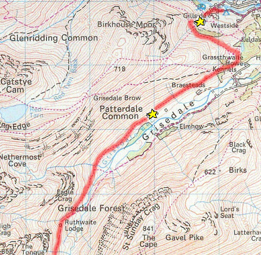
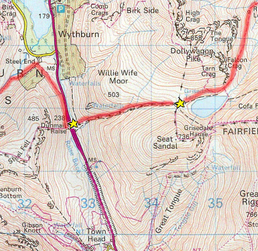
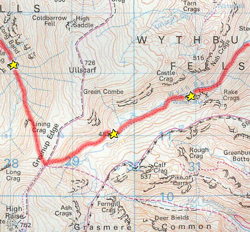
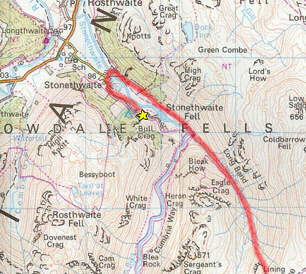

The initial climb of the day was very steep and a shock so early on. However once the path for Striding Edge forked off, we descended down into Grisedale and walked, in the sunshine, along a good path for about 2km.
We then had a short, steep climb to reach the saddle between Dollywahen Pike and Fairfield. The climb was much more 'typically Lake District' than any other previously as the path was well layed with large rock steps. But by the time we reached Ruthwaite Lodge we were hot and tired. But on time it started raining, we had cooled down and continued our, now more shallow, ascent to Grisedale Tarn.

The final part of the ascent to Grisedale Tarn was actually quite easy as we walked around staying, roughly, on the same contour. At the tarn we had to make our own path to the other side which emphasised just how much better the paths are in the Lake District compared to Dartmoor.
On the other side we prepared for a very sharp descent down to the main road. It was quite slippery and a few people did fall although incurred no major injuries. As we reached the bottom the nice weather gave up and it heavily rained. Our route took us parallel to the main road on a pretty poor path and it wasn't a particularly fun part of the day.
We had lunch near Steel End in an unused barn which meant that for once we were dry while eating despite it still raining outside. We were about halfway through the day and set off, after lunch, on a reasonably good path beside Wyth Burn.

The walk along Wyth Burn was flat until we reached the waterfalls, but even the climb here was not difficult. However once we had finished ascending the terrain became much more difficult to walk in. It was now all marsh and we were constantly going in knee deep. This also made our progress slow as we had to find ways around the larger bogs.
One of the other groups, having already climbed Helvellyn that day, caught us up in this marshy section and we continued on together, making a 'very' make-shift path on the way up to Lining Crag.
Arriving at this Crag we looked over and almost contemplated trying to descend a near vertical cliff until we saw the path bearing down to our right. This descent, however, was not easy. In fact it was one of the hardest bits of walking we had to do. It had been raining very hard for a couple of hours and so the path (made from large rock steps - like the one's we enjoyed climbing earlier) became deadly slippery. Everyone had to take great care in descending, and something that was only about 500m long took a rather long time.
Once we had reached the bottom though we saw that it was all flat until the campsite and along a good path.

The other group had forged on ahead of us, so to make up time some of our group tried to make the daring crossing of Stonethwaite Beck. Precariously balanced on mossy rocks only one of us made it over so the rest of the group had to walk and then double-back on themselves at Stonethwaite (but as it had briefly stopped raining it wasn't too bad).
The campsite was not one to remember. Minimal facilities can be dealt with but it was infected by midges: they had rarely bothered us before - only really when stopped by rivers - but never to the extent that they did here, especially the next morning.
It rained literally as we started pitching our tents but it wasn't hard nor lasted long. Therefore we managed to eat in the dry and prepare for our final day.